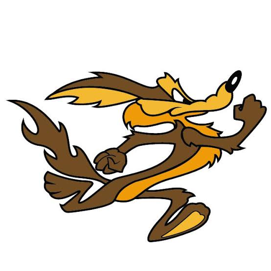
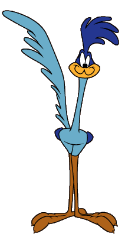

Nuestro equipo
Estos son los integrantes de nuestro equipo
El coyote
 |
El Coyote (Wile E. Coyote) es uno de los personajes más icónicos de los Looney Tunes de Warner Bros. |
El correcaminos
El Correcaminos (Road Runner) es la contraparte inseparable de Wile E. Coyote en los Looney Tunes, |
 |